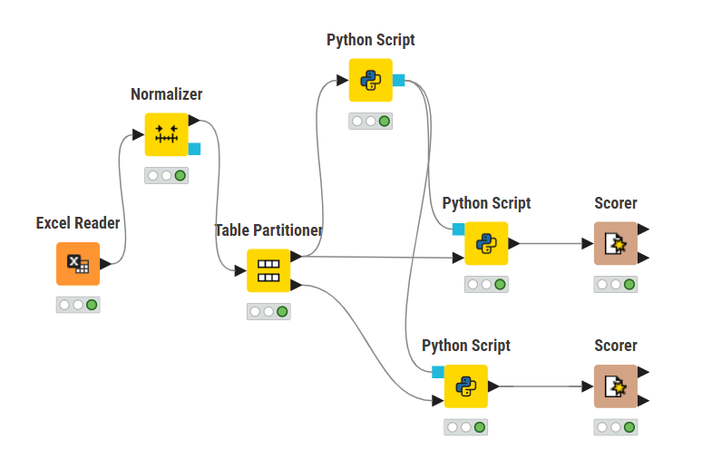
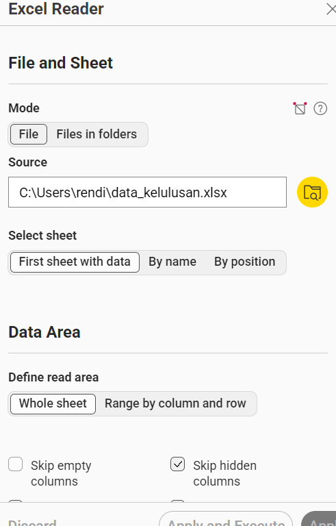
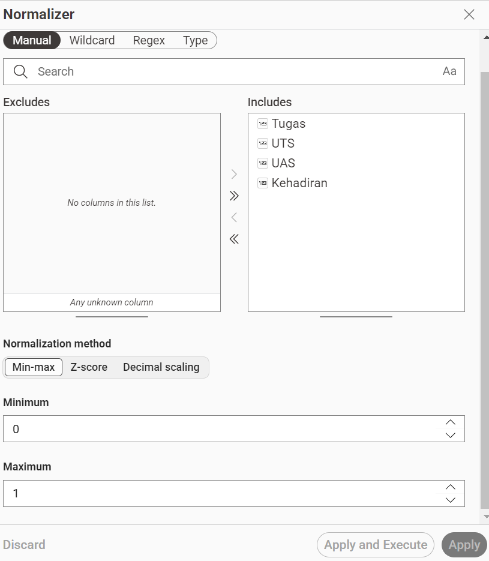
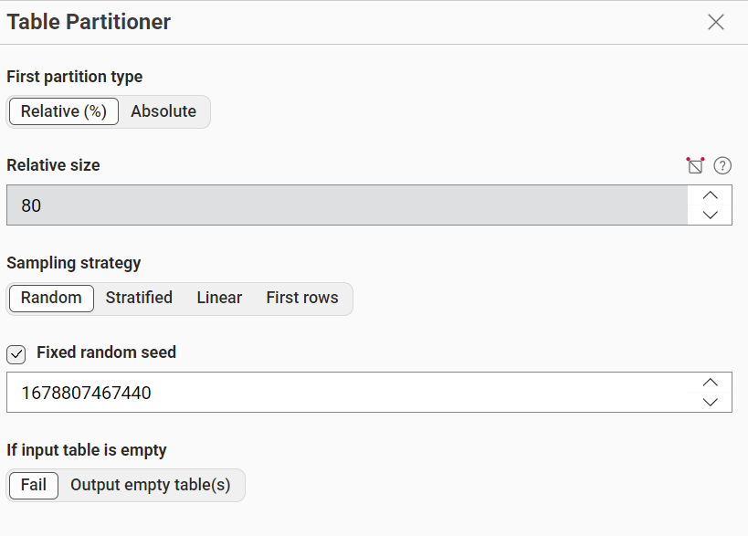
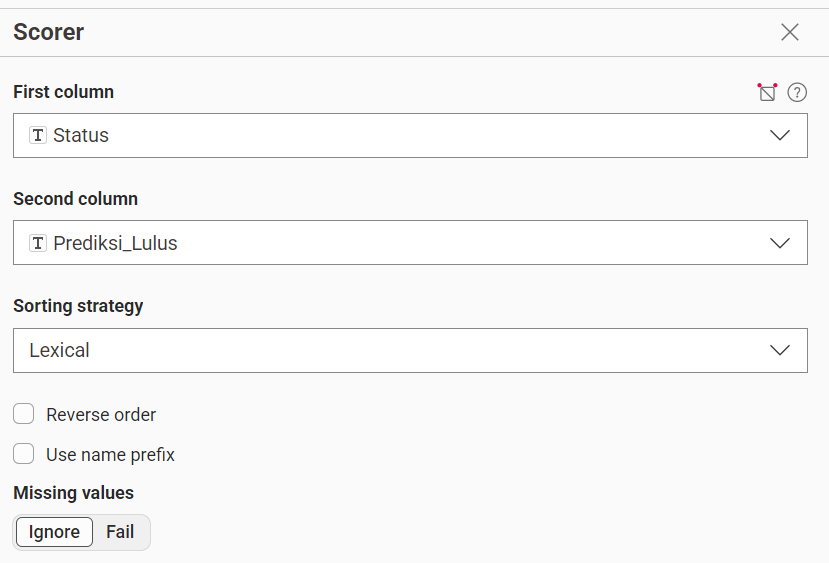

Tugas Naive Bayes#
File Tugas#
Pengertian Naive Bayes#
Naive Bayes adalah algoritma klasifikasi berbasis probabilitas yang digunakan untuk menentukan kelas suatu data berdasarkan nilai fitur yang dimiliki. Algoritma ini menggunakan Teorema Bayes dengan asumsi bahwa setiap fitur bersifat independen satu sama lain.
Pada penelitian ini, Naive Bayes digunakan untuk memprediksi status kelulusan mahasiswa berdasarkan beberapa parameter akademik, yaitu:
Tugas
UTS
UAS
Kehadiran
Target yang diprediksi adalah:
Status = Lulus
Status = Tidak Lulus
Rumus Naive Bayes#
Keterangan:
- \[ \( X \) = data mahasiswa (Tugas, UTS, UAS, Kehadiran) \]
- \[ \( P(\text{Status}) \) = probabilitas kelas (Lulus / Tidak Lulus) \]
- \[ \( P(\text{fitur} \mid \text{Status}) \) = probabilitas setiap fitur terhadap kelas \]
Cara Kerja pada Dataset#
Menghitung jumlah data Lulus dan Tidak Lulus
Menghitung rata-rata (mean) dan standar deviasi tiap fitur:
Tugas
UTS
UAS
Kehadiran
Menghitung probabilitas tiap fitur menggunakan distribusi Gaussian
Mengalikan semua probabilitas untuk masing-masing kelas
Memilih kelas dengan probabilitas terbesar sebagai hasil prediksi
Deskripsi Dataset#
Nama Kolom |
Tipe Data |
Deskripsi |
|---|---|---|
Tugas |
Numerik |
Nilai rata-rata tugas mahasiswa |
UTS |
Numerik |
Nilai Ujian Tengah Semester |
UAS |
Numerik |
Nilai Ujian Akhir Semester |
Kehadiran |
Numerik |
Persentase kehadiran mahasiswa (0–100) |
Status |
Kategorikal |
Label kelulusan (Lulus / Tidak Lulus) |
Workflow KNIME#

Penjelasan Node#
Excel Reader#

Node ini berfungsi untuk membaca dataset.
Normalizer#

Node ini berfungsi untuk ntuk menyamakan skala nilai pada data numerik agar berada dalam rentang tertentu (0 - 1).
Dengan normalisasi:
Menghindari dominasi nilai yang lebih besar
Membuat perhitungan model lebih stabil
Pada tugas ini, Normalizer digunakan untuk mengubah nilai Tugas, UTS, UAS, dan Kehadiran ke rentang yang sama sebelum proses klasifikasi.
Table Partitioner#

Node Table Partitioner berfungsi untuk membagi dataset menjadi dua bagian, yaitu data training dan data testing.
Dengan pembagian ini:
Data training digunakan untuk melatih model
Data testing digunakan untuk menguji performa model
Pada tugas ini, data dibagi dengan perbandingan:
80% data training
20% data testing
Pembagian dilakukan secara acak agar data lebih representatif.
Python Script#
Script Learned:
import knime.scripting.io as knio
from sklearn.naive_bayes import GaussianNB
df = knio.input_tables[0].to_pandas()
x = df[['Tugas','UTS','UAS','Kehadiran']]
y = df['Status']
model = GaussianNB()
model.fit(x,y)
knio.output_objects[0] = model
Script Predictor:
import knime.scripting.io as knio
model = knio.input_objects[0]
test_df = knio.input_tables[0].to_pandas()
X_test = test_df[['Tugas', 'UTS', 'UAS', 'Kehadiran']]
predictions = model.predict(X_test)
test_df['Prediksi_Lulus'] = predictions
knio.output_tables[0] = knio.Table.from_pandas(test_df)
Node Python Script berfungsi untuk mengintegrasikan kode Python ke dalam workflow KNIME, sehingga memungkinkan penggunaan library machine learning seperti Scikit-learn.
Pada tugas ini, Python Script digunakan untuk:
Melatih model klasifikasi Naive Bayes (GaussianNB)
Melakukan prediksi terhadap data
Mengolah data menggunakan library Python
Scorer#

Node Scorer berfungsi untuk mengevaluasi performa model klasifikasi dengan membandingkan hasil prediksi dengan data sebenarnya.
Pada tugas ini, Scorer digunakan untuk menilai seberapa baik model Naive Bayes dalam memprediksi Status (Lulus / Tidak Lulus).
Kesimpulan#
Berdasarkan implementasi algoritma Naive Bayes (GaussianNB) pada dataset kelulusan mahasiswa, dapat disimpulkan bahwa metode ini efektif digunakan untuk melakukan klasifikasi status kelulusan berdasarkan variabel akademik seperti Tugas, UTS, UAS, dan Kehadiran.
Workflow yang dibangun di KNIME menunjukkan bahwa proses klasifikasi dilakukan melalui beberapa tahap penting, yaitu mulai dari pembacaan data, normalisasi, pembagian data training dan testing, pelatihan model menggunakan Python Script, hingga evaluasi menggunakan Scorer.
Hasil dari proses ini menunjukkan bahwa Naive Bayes mampu memprediksi status kelulusan dengan cara menghitung probabilitas setiap kelas berdasarkan fitur yang ada, sehingga menghasilkan keputusan akhir berupa Lulus atau Tidak Lulus.
Secara keseluruhan, metode Naive Bayes cukup sesuai untuk kasus klasifikasi sederhana seperti prediksi kelulusan, karena:
Mudah diimplementasikan
Cepat dalam proses komputasi
Cukup akurat untuk data numerik yang terstruktur